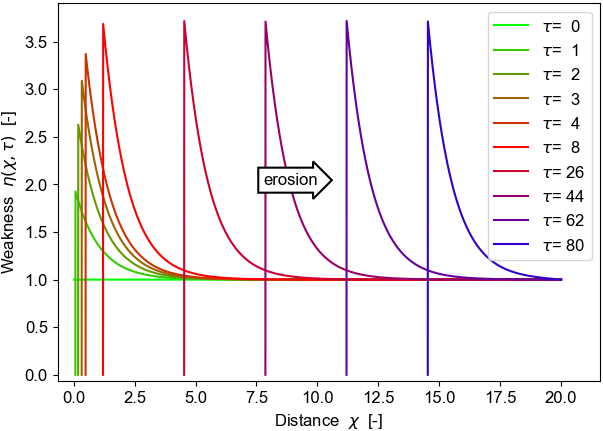

Weathering-mediated erosion¶
Exploration of weathering-driven weakening on rock erosion.
The focus is on environments with no soil accumulation such as on steep bedrock channel walls. The current treatment is 1d only, and for expository purposes it simplistically assumes an exponentially decaying weakening profile with depth into the rock.
The code is provided as a Python3 package and an IPython Jupyter notebook.